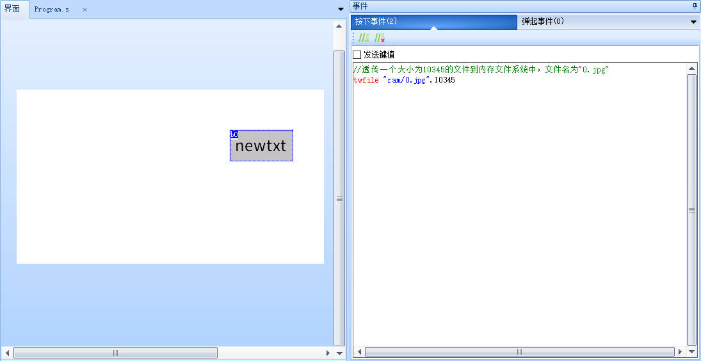

twfile-单片机发送文件给串口屏
仅X2、X3、X5系列支持
注意
twfile有特殊的传输格式要求，详细的文件透传逻辑请参考: 运行中串口传输文件到内存或SD卡
twfile filepath,filesize
filepath:目标文件路径(例:"ram/0.jpg"或"sd0/1.jpg")
filesize:文件大小
twfile-示例1
//透传一个大小为10345的文件到SD卡根目录，文件名为"a.jpg"
twfile "sd0/a.jpg",10345
注意
twfile有特殊的传输格式要求，详细的文件透传逻辑请参考: 运行中串口传输文件到内存或SD卡
twfile-示例2
//透传一个大小为10345的文件到内存文件系统中，文件名为"0.jpg"
twfile "ram/0.jpg",10345

注意
twfile有特殊的传输格式要求，详细的文件透传逻辑请参考: 运行中串口传输文件到内存或SD卡
要使用内存文件系统必须先在工程配置选项中配置内存文件系统的大小，新建工程默认内存文件系统大小为0，即不可能使用。